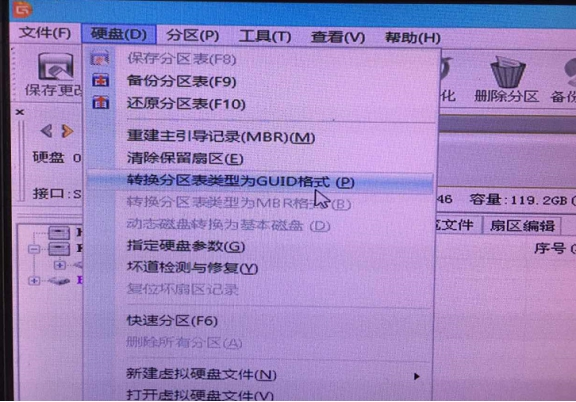
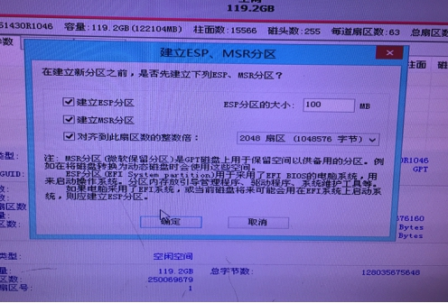
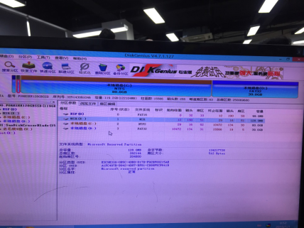
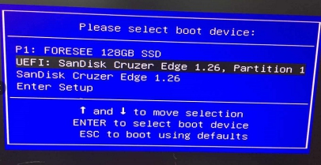
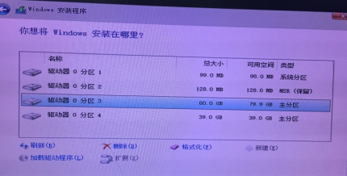
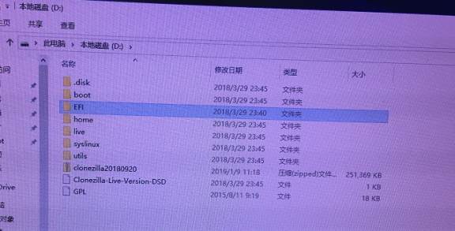
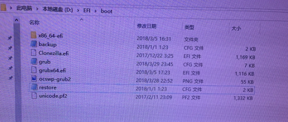
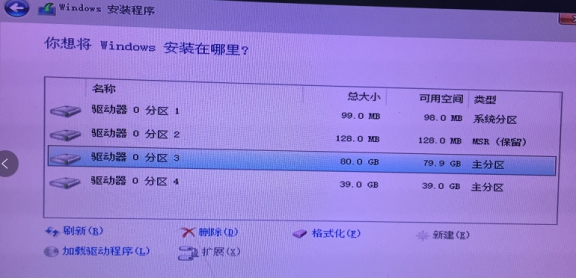
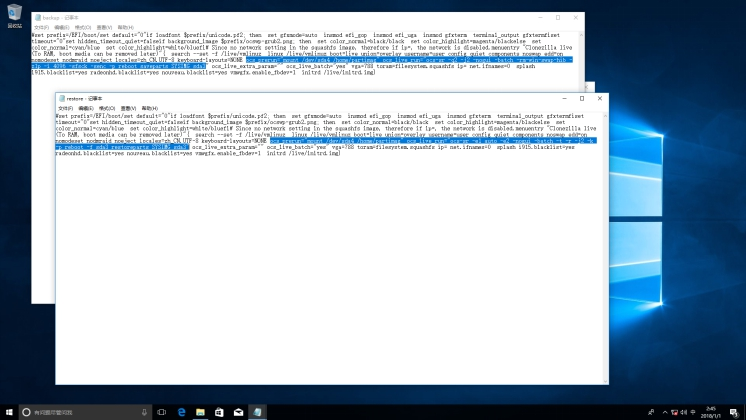

uefi下备份还原操作步骤如下：
1. WINPE，用分区工具，转换硬盘为UEFI（GUID）格式

2. 统分区和FAT32分区。图示分了2个区，系统NTFS的 C分区和FAT32的D分区。


3. UEFI模式安装系统


4. clonezilla解压缩到FAT32分区的根目录下。
链接：https://pan.baidu.com/s/1JGikeEt9T6sJt79Sf_A1Hw
提取码：ojt8

5. 硬盘的具体分区情况，修改盘符参数（备份：EFI\boot\backup.cfg；还原：EFI\boot\restore.cfg）。具体可参考下图：

ackup：ocs_prerun=“mount /dev/sda4 /home/partimag” ocs_live_run=“ocs-sr -q2 -j2 -nogui -batch -rm-win-swap-hib -z1p -i 4096 -sfsck -senc -p reboot saveparts SYSIMG sda3”
restore：ocs_prerun=“mount /dev/sda4 /home/partimag” ocs_live_run=“ocs-sr -e1 auto -e2 -nogui -batch -t -r -j2 -k -p reboot -f sda3 restoreparts SYSIMG sda3”
序号同安装时看到的分区序号
譬如实例，是sda3为待备份的系统分区，sda4是存放备份文件的分区。

